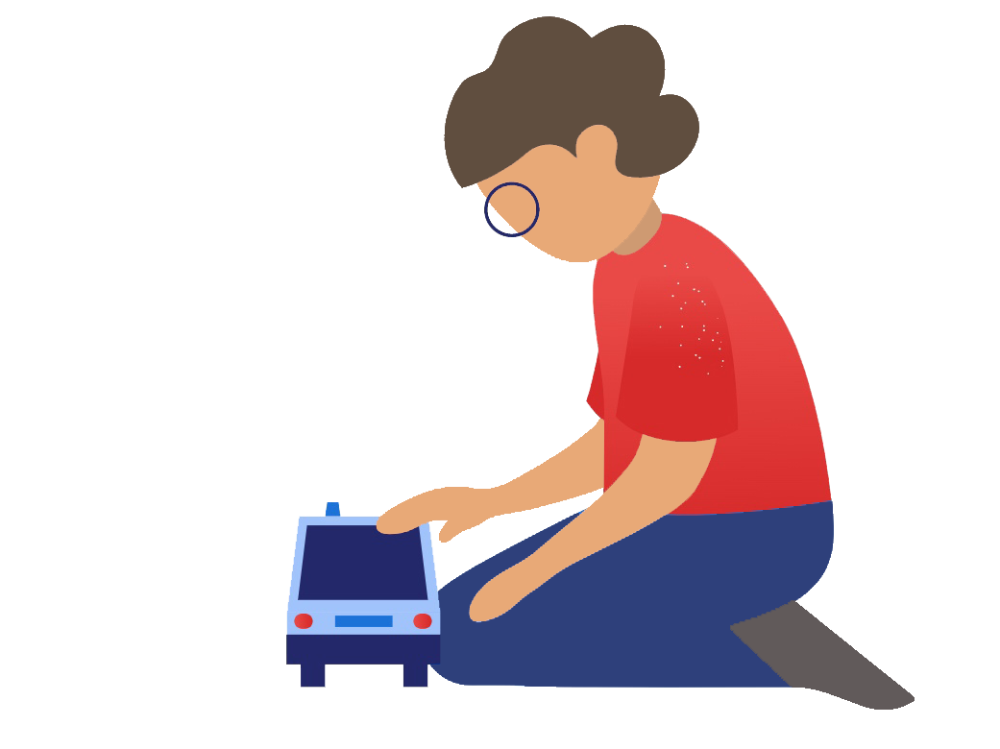

Консультационный центр
"ДЕЛЬФИНЧИК"
Уважаемые родители дошколят!
Консультационный центр предлагает вам задать свои вопросы нашим специалистам:

Консультативную помощь могут получить:

Как записаться на консультацию:
4 способа:
Алгоритм обращения в КЦ

Перечень предоставляемых услуг:
Нормативно - правовые документы:
Локальные документы
Региональные документы
Федеральные документы
Подпишитесь на наш канал в телеграм, чтобы быть в курсе последних новстей

График работы КЦ
Понедельник
с 8.00-12.30
с 15.00-19.00
с 15.00-19.00
Вторник
с 8.00-18.00
Среда
с 9.00-16.30
Четверг
с 8.00-18.00
Пятница
с 8.00-17.00
Наши специалисты
Для Вас, родители
Федеральные информационно-образовательные ресурсы
Краевые информационно-образовательные ресурсы
Коллекция электронных образовательных ресурсов
Образовательные интернет-порталы
Детские сайты

Карта навигации
Мы семья с приёмным ребенком
Мой ребенок замечательный, но есть вопросы
Нормативно-правовые вопросы
Психолого-педагогическая помощь
К кому обратиться если мой ребенок с особенностями развития
Мой ребенок любит спорт
Наши контакты


Полезные материалы от специалиста
Полезные материалы от специалиста
Полезные материалы от специалиста
Полезные материалы от специалиста
Полезные материалы от специалиста
Записаться на консультацию
Оставить отзыв о работе центра